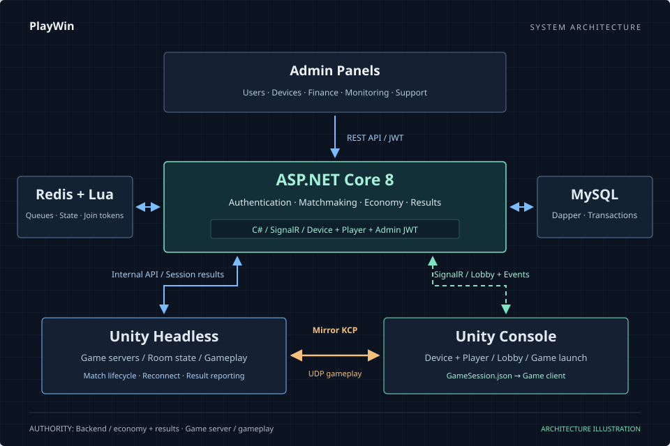

01 / PLAYWIN — ONLINE ARCADEPlayWin · بازی آنلاین روی دستگاههای آرکید
از بکاند و گیمسرور،
تا کنسول و ارتباط بازی.
طراحی و پیادهسازی یکپارچه بکاند، سرور مرکزی، گیمسرور Unity Headless، کنسول و ارتباط بازیها با سرور؛ از ورود بازیکن و لابی تا اجرای بازی و ثبت نتیجه.
- نقش من
- طراحی و پیادهسازی سرتاسری نرمافزار و ارتباطات
- معماری
- REST API و JWT برای هویت و فرمانها؛ SignalR برای لابی و اعلانها؛ Mirror KCP/UDP برای گیمپلی
- داده و نشست
- MySQL و Dapper، بههمراه Redis و Lua برای صف، وضعیت و توکن ورود
تصویر: نمای شماتیک معماری پروژه